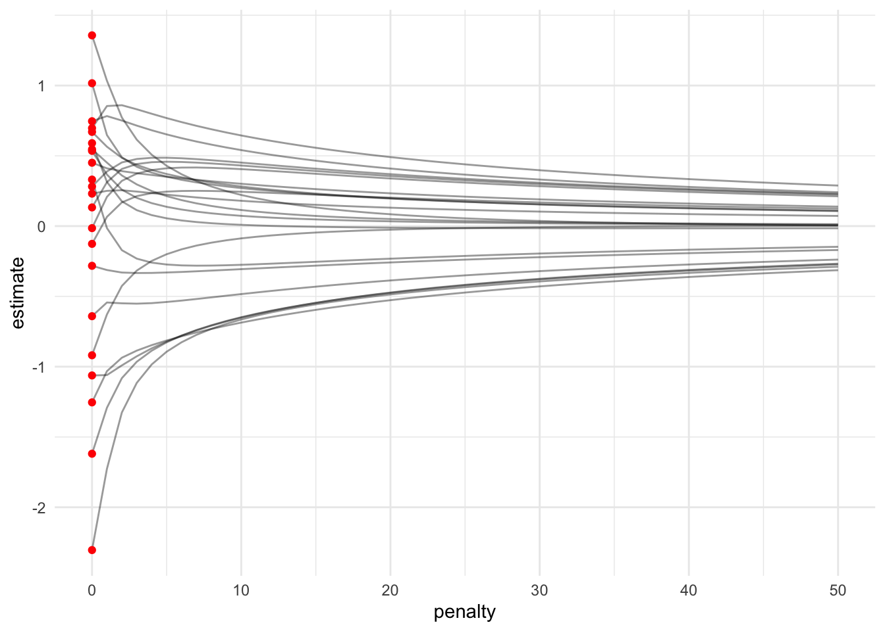
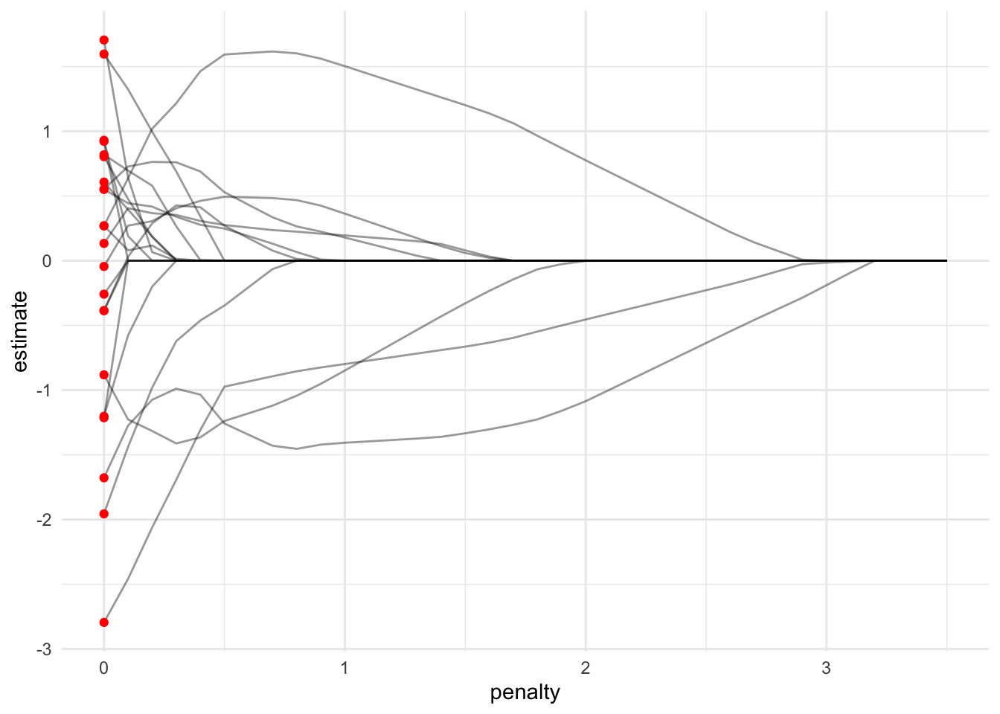

21 Regularization
21.1 Motivation
The previous chapter introduced the idea of regularization in the context of random forests. Regularization is a powerful technique for parametric regression models.
This section takes the PDB examples and explores three types of regularized regression models: ridge regression, LASSO regression, and elastic net regression.
21.2 Linear regression
Ordinary least squares (OLS) linear regression generates coefficients that minimize the sum of squared residuals.
\[\min(SSE) = \min\left(\sum_{i = 1}^n (y_i - \hat{y_i}) ^ 2\right)\]
It is impossible to solve for OLS when \(p > n\) where \(p\) is the number of predictors and \(n\) is the number of observations. Additionally, OLS is unstable when data contain multicollinearity.
Let’s fit a linear regression model on the PDB data set.
lm_mod <- linear_reg() |>
set_mode(mode = "regression") |>
set_engine(engine = "lm")
lm_rec <- recipe(non_return_rate ~ ., data = pdb_train) |>
add_role(State_name, County_name, Low_Response_Score, new_role = "id") |>
step_rm(has_role("id"))
lm_wf <- workflow() |>
add_model(spec = lm_mod) |>
add_recipe(recipe = lm_rec)
lm_wf |>
fit(data = pdb_train) |>
extract_fit_parsnip() |>
# vi() |>
tidy() |>
print(n = Inf)# A tibble: 23 × 5
term estimate std.error statistic p.value
<chr> <dbl> <dbl> <dbl> <dbl>
1 (Intercept) 25.9 0.109 238. 0
2 Renter_Occp_HU_ACS_13_17 0.000528 0.000160 3.30 9.55e- 4
3 Pop_18_24_ACS_13_17 0.00142 0.000112 12.7 7.89e- 37
4 Female_No_HB_ACS_13_17 0.000739 0.000367 2.02 4.39e- 2
5 NH_White_alone_ACS_13_17 -0.000940 0.0000495 -19.0 3.84e- 80
6 Pop_65plus_ACS_13_17 -0.00197 0.000149 -13.2 1.47e- 39
7 Rel_Child_Under_6_ACS_13_17 0.00190 0.000355 5.34 9.17e- 8
8 Males_ACS_13_17 0.000885 0.000147 6.01 1.92e- 9
9 MrdCple_Fmly_HHD_ACS_13_17 -0.00267 0.000251 -10.7 1.81e- 26
10 Pop_25_44_ACS_13_17 0.00122 0.000142 8.56 1.13e- 17
11 Tot_Vacant_Units_ACS_13_17 0.00209 0.0000922 22.7 3.97e-113
12 College_ACS_13_17 -0.000345 0.0000738 -4.68 2.93e- 6
13 Med_HHD_Inc_ACS_13_17 -0.0000977 0.00000169 -57.9 0
14 Pop_45_64_ACS_13_17 0.00173 0.000160 10.8 2.51e- 27
15 HHD_Moved_in_ACS_13_17 0.00387 0.000178 21.7 3.18e-104
16 Hispanic_ACS_13_17 -0.000372 0.0000532 -6.99 2.77e- 12
17 Single_Unit_ACS_13_17 -0.00263 0.0000800 -32.9 1.64e-235
18 Diff_HU_1yr_Ago_ACS_13_17 -0.000849 0.0000978 -8.68 4.23e- 18
19 Pop_5_17_ACS_13_17 0.00170 0.000145 11.7 9.76e- 32
20 NH_Blk_alone_ACS_13_17 0.000547 0.0000565 9.68 3.92e- 22
21 Sngl_Prns_HHD_ACS_13_17 -0.00432 0.000208 -20.7 3.62e- 95
22 Not_HS_Grad_ACS_13_17 -0.000210 0.000138 -1.53 1.26e- 1
23 Med_House_Value_ACS_13_17 0.00000928 0.000000224 41.4 0 21.3 Regularization
Regularization/Penalization: To reduce the magnitude of parameters (coefficients).
Regularization, or penalization, allows linear regression to work with very wide data, to generate stable estimates for data with multicollinearity, and to perform feature selection.
For regression, the idea is to add a penalty \(P\) to the optimization routine:
\[\min(SSE + P) = \min\left(\sum_{i = 1}^n (y_i - \hat{y_i}) ^ 2 + P\right)\]
21.4 Ridge Regression
\[\min(SSE + P) = \min\left(\sum_{i = 1}^n (y_i - \hat{y_i}) ^ 2 + \lambda\sum_{j = 1}^p\beta_j^2\right)\]
Ridge regression adds an L2 penalty to the optimization routine. The model has one hyperparameter, \(\lambda\), which determines how much penalty to add. There is no penalty when \(\lambda = 0\) (just OLS).
All variables should be centered and scaled (standardized) before estimation. Thus the coefficients will be in standardized units.
Ridge regression reduces coefficients but it does not eliminate coefficients.
21.4.1 Ridge regression reduces but does not eliminate coefficients
fit_ridge <- function(data, penalty) {
ridge_rec <- recipe(non_return_rate ~ ., data = pdb_train) |>
add_role(State_name, County_name, Low_Response_Score, new_role = "id") |>
step_rm(has_role("id")) |>
step_normalize(all_predictors())
ridge_mod <- linear_reg(penalty = penalty, mixture = 0) |>
set_mode(mode = "regression") |>
set_engine(engine = "glmnet")
ridge_wf <- workflow() |>
add_recipe(recipe = ridge_rec) |>
add_model(spec = ridge_mod)
ridge_wf |>
fit(data = pdb_train) |>
extract_fit_parsnip() |>
tidy() |>
mutate(penalty = penalty)
}
ridge_fit <- seq(0, 50, 1) |>
map_dfr(.f = ~ fit_ridge(pdb_train, .x))
ggplot() +
geom_line(
data = filter(ridge_fit, term != "(Intercept)"),
mapping = aes(penalty, estimate, group = term),
alpha = 0.4
) +
geom_point(
data = filter(ridge_fit, term != "(Intercept)", penalty == 0),
mapping = aes(penalty, estimate),
color = "red"
)
Note that regularized regression models expect standardized predictors (mean = 0 and standard deviation = 1). This changes this starting estimated parameters.
21.5 LASSO Regression
\[\min(SSE + P) = \min\left(\sum_{i = 1}^n (y_i - \hat{y_i}) ^ 2 + \lambda\sum_{j = 1}^p|\beta_j|\right)\]
Least Absolute Shrinkage and Selection Operator (LASSO) regression adds an L1 penalty to the optimization routine. The model has one hyperparameter, \(\lambda\), which determines how much penalty to add. There is no penalty when \(\lambda = 0\) (just OLS).
All variables should be centered and scaled (standardized) before estimation. Thus the coefficients will be in standardized units.
LASSO regression can regularize coefficients all the way to zero.
21.5.1 LASSO regression eliminates coefficients
fit_lasso <- function(data, penalty) {
lasso_rec <- recipe(non_return_rate ~ ., data = pdb_train) |>
add_role(State_name, County_name, Low_Response_Score, new_role = "id") |>
step_rm(has_role("id")) |>
step_normalize(all_predictors())
lasso_mod <- linear_reg(penalty = penalty, mixture = 1) |>
set_mode(mode = "regression") |>
set_engine(engine = "glmnet")
lasso_wf <- workflow() |>
add_recipe(recipe = lasso_rec) |>
add_model(spec = lasso_mod)
lasso_wf |>
fit(data = pdb_train) |>
extract_fit_parsnip() |>
tidy() |>
mutate(penalty = penalty)
}
lasso_fit <- seq(0, 3.5, 0.1) |>
map_dfr(.f = ~ fit_lasso(pdb_train, .x))
ggplot() +
geom_line(
data = filter(lasso_fit, term != "(Intercept)"),
mapping = aes(penalty, estimate, group = term),
alpha = 0.4
) +
geom_point(
data = filter(lasso_fit, term != "(Intercept)", penalty == 0),
mapping = aes(penalty, estimate),
color = "red"
)
21.6 Elastic Net Regression
\[\min(SSE + P) = \min\left(\sum_{i = 1}^n (y_i - \hat{y_i}) ^ 2 + \lambda_1\sum_{j = 1}^p\beta_j^2 + \lambda_2\sum_{j = 1}^p|\beta_j|\right)\]
Elastic net regression combines ridge regression and LASSO regression. It has two hyperparameters, \(\lambda_1\) and \(\lambda_2\). Sometimes the hyperparameters are \(\lambda\) and mixture, which determines how much of \(\lambda\) to apply to each penalty (i.e. mixture = 0 is ridge regression and mixture = 1 is LASSO regression).
All variables should be centered and scaled (standardized) before estimation. Thus the coefficients will be in standardized units.
Elastic net regression can perform feature selection, but in a less dramatic fashion than LASSO regression.